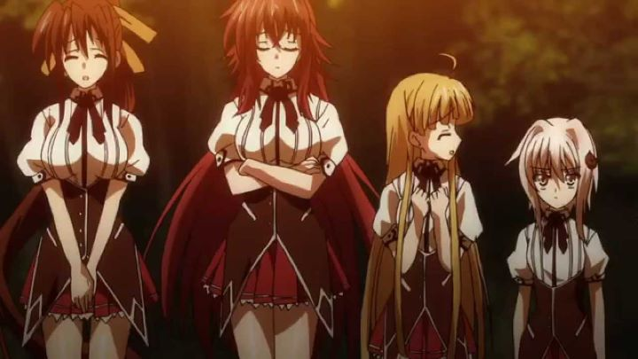

Disclaimer: this review covers seasons 1 through 3, "Highschool DxD" (2012), "Highschool DxD New" (2013), and "Highschool DxD Born" (2015).Few fanservice-oriented anime have had the long-lasting success and prominence as "Highschool DxD." The first season aired in Japan in 2012 (around the time when overseas online anime streaming became better standardized), and as of 2017, new official and unofficial sexy artwork of the characters can be found, specifically based of the successful anime rather than the original and on-going light novels (each can be recognized for their art style). Even if you've never seen the show, if you follow anime fandom even passively, you would likely recognize any random character as being from this franchise. To date, over 36 episodes exist, not including OVA's, and a fourth season is currently in development for release circa 2018 (although its artstyle looks noticeably different in early previews, so how it ties to the current seasons remains to be seen).But if researching the show, one might ask "why" the series became so popular. On paper, the plot is generic: a high-school boy discovers there are supernatural devils and monsters at his school, and gets wrapped up into their adventures while trying to control himself against the female devil students flirting with him. There are numerous anime with this exact same plot, enough for it to be a standalone genre in of itself. Personally, I suspect the success comes mainly from two points: the huge array of consistently attractively designed female characters, and the production group's success in continously promoting the franchise through anime, light-novels, manga, games, apps and more. Finally in 2017, I gave the show a chance myself, and watched the first three seasons of "Highschool DxD." After having seen the show, I'll add a third reason why the show remains so popular: it's fun. It's stupid, guilty-pleasure fun.The series follows Issei Hyodo, a high school student with a horny streak: he and his two guy friends spend their days talking about girls and their sexual fantasies, and occasionally sneak a peak into the women's chaning room or at the track team while they practice. All the while, they desparately want girlfriends and dream of getting laid (essentially like any other highschool boy, but to such extremes that it is no wonder why they've had trouble getting girls to like them). That changes one day for Issei when another girl randomly asks him out on a date. Amazed at his luck, he agrees, and at the end of his date, his new girlfriend transforms into a fallen angel, a demon with black wings, and Issei is killed that night, regretting that his life would end without him ever had touched a pair of breasts. Classy.At the last moment, popular redhead student Rias Gremory swoops in and saves Issei's life by resurrecting him as a devil. She herself is a devil, and runs the school's "occult research club" as a guise to have her devil servants meet with her each day. Issei spends the show learning more about this secret world he never knew about, training to become a stronger servant while learning about his unique powers as a host to the great red dragon, and fighting alongside his new friends in conflicts between religous groups (angels, devils, etc.) from Christian, Buddist, and Norse mythology.The show has a lot going on, and can basically be viewed as a shonen-style action anime with religous overtones. I suspect the devout will be slightly offended by the show, given that it portrays devils as respectible and kind-hearted while initially showing angels (and certainly the church) as more evil in nature, and most of the portrails likely aren't correct to any religous texts. Of course, if you've seen or played any anime or video games from Japan, this type of subject matter isn't all that unusual. It's a backdrop to have our main characters fight, scream until they power-up to a new battle form, train to get stronger, and learn the importance of friendship and treating each other as family. If you enjoy shows like "Dragonball Z," "Naurto" or "One Piece," this sounds like a common format, and like those shows, "Highschool DxD" is able to remain fun and exciting to watc because it doesn't take itself too seriously. For all the dramatic twists and relationship developments that are relayed to the audience, there's a sense that the creators are on the same page as you, saying "and-what-if-this-happend-yes-it'd-be-kinda-stupid-but-still-cool-right?" And beyond the action and fantasy world-building (making up roughly 75% of the show's content), there's also the sexy bits. Issei's new position gives him some perks, starting with his new master Rias: the red-haired vixen likes be affectionate with her servants, especially Issei, so she often sleeps nude with him each night (no sex, of course). All the girls serving the Gremory house are cute, each with different hair colors and body types, ensuring he (and the viewers) have plenty of eye-candy to look at. Almost all of the series' nudity comes from uncensored nipples in the home video release, either through torn clothes during battle, or in every other episode, through the girls showing off their assets to Issei willingly, or through trying on revealing swimsuits or underwear. The sloshing sound effects and jello-like physics of the animated breasts is a little ridiculous, but anime has been known for worse examples. Anyway, Iseei's battle strength is relatively weak despite his intentions, but when using both his love for his friends and his passion for sexy things, he can get bursts of power that exceed his foes. One such unique power he gains is the ability to make the clothing of his female foes explode in an instant, reducing them to squatting, blushing girls, a power he developed through sheer force of will. He proudly exclaims he will use his powers to one day become the "harem king," a quote his teammates take as a joke, until he starts stating this during more serious battles and in front of more important individuals of the demon world. Generally, I was impressed with how much fun I had watching the show throughout the three seasons. The first and second season do a great job balancing sexier moments with world-building and action, and despite the world-building and action not being particularly good, it still balances the rest out well to make entertaining to marathon. Even the ending credit animations impressed me, being better animated than the show and showing great creativity in its visuals, trying out new ways to show off the show's curvacious characters. However, by the half-way point of season two, most of the female characters come out and admit their love for Issei, a love that prior was secretly budding. Not only to they crush on him, they can get aggresive, sometimes with multiple characters nearly seducing the virgin Iseei in a given episode. This effectively gives Iseei the harem he always wanted, at least in the terms anime fans would be familar with, with almost a dozen girls admitting repeatedly to him that they would allow any sexual activity he wanted as his command. Like most anime, Issei plays it safe and tries to control himself, and ultimately never gets physical with anyone. But this contradicts his intentions so clearly made from the beginning of the show. And he continues to strive to be the "harem king," completely ignoring that he already achieved that goal. It can be more than a little frustrating. Additionally, each season continously adds more characters and more backstory to the point where its easy to get lost if you miss an episode or two, and most developments are cheaply conveyed through lengthy exposition that often feels random. In short, if you want to enjoy "Highschool DxD," you need to check your common sense at the door, thinking too much can ruin any enjoyment in watching. Also, a handful of nudity comes at the expense of enemies holding them at ransom, which feels a bit icky... although different viewers may disagree on which scenes and how many of them give off any such problems.Rias Gremory herself is both the biggest strength and weakness of the show. She is a bit of a inconsistent character: across all media, the only consistent elements are that she has red hair and large breasts. The art style, expressions and body type of the poster child varies drastically. In the show, her personality also changes: she is either cool and mysterious, regal and authoritative, sexy and flirtatious, or insecure and jealous. Some of these traits are great to see in a female lead, others are not, and they don't mix well in a single person. It's a shame since this balance was well kept in the first season, but gets worse from the first episode of the second season. It gets tiring to see the once proud and ambitious Rias get into petty cat fights, yelling "He's MY Issei!" and hearing back "But he's MY Issei too!" Similar behavior skips occur in other characters as well. The animation is generally passable, as most characters remain static during most scenes, and even the action scenes look cheap comapred to most other anime. The visuals get a higher grade only because the character designs are consistently attractive and generally distinct, even if it's through simply changing hair color or adding glasses to a character model. The music has a few memorable tracks (repeated often over the course of the show), and the acting enhances the comedy effectively. This is especially true of the English dub from Funimation: the dialogue liberally uses slang and jokes likely not part of the original Japanese script, but it makes the show funnier to hear Issei and his friends' off-handed sex jokes (curiously, the script and dialogue was directed by female actress and director Colleen Clinkenbeard, so female viewers offended by the show can't simply blame it on incensitive men being involved in the entirety of the production). However, a handful of English voices have trouble getting used to the characters at first, and because a handful of voices change over the course of the seasons (either for business or controversy reasons I won't get into here), a certain amount of acceptance has to be given by a viewer wanting the dub. Curiously, the American home video releases do not include the normal-length OVA's (despite including the "omake" shorts, subtitled only)... in a decade prior, Funimation might have collected these episodes into a standalone release, but they are unlikely today with the sheer amount of anime being released as of 2017.Overall, "Highscool DxD" is a very average anime with a handful of story and animation problems. But the strength of the appealing characters and the overall fun of the production makes the show greater than the sum of its parts. Truly, it marks the standard that all other fanservice anime should meet. For most people, they already know if they would ever be willing to watch a show with this type of sexual content. If you are that type of person and haven't seen this yet, I think you'll enjoy it. If you aren't that type of person... at least give season 1 a shot, and while not necessary, seasons 2 and 3 are still good addtions (at the very least, season 3 gives a vague idea of what the title's "DxD" stands for).
- "Ani" More reviews can be found at : https://2danicritic.github.io/ Previous review: review_Hetalia_-_Season_1_and_2 Next review: review_Highschool_of_the_Dead